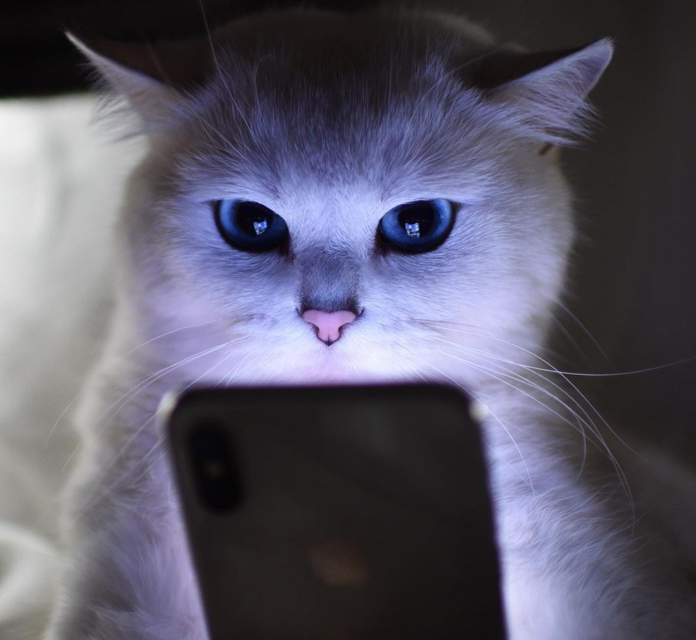
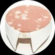

meowed

Curtido por respondeai e outras 101.523 pessoas

9gag
meowed
barked
nathanwpyle...
wawawiwac...
respondeai
filomoderna

memeriago
meowed
Curtido por respondeai e outras 101.523 pessoas
meowed
Curtido por adorable_animals e outras 99.159 pessoas
meowed
Curtido por respondeai e outras 101.523 pessoas